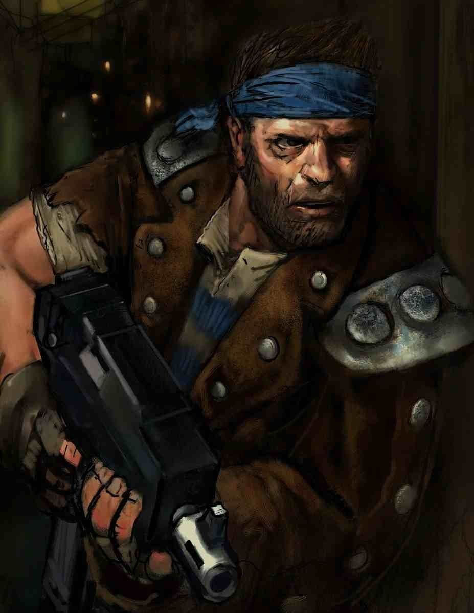

Добро пожаловать в мир-улей под названием Некромунда!
Заселенная в давние времена Темных веков технологии, Некромунда была обращена к свету Императора Легионом Имперских кулаков во время Великого крестового похода.
Говорят что пепельные пустоши, на которых произрастают колоссальные ульи, образовались еще в те времена, когда мир воспротивился приходу Империума.
Однако, правда навеки похоронена под толщей токсичных отходов...
А теперь, Ваня расскажет, какие есть 6 основных играбельных Домов (фракций) данного мира-улья, которые хорошо подойдут новичкам:
- Дом Орлок

- Дом Делакью

- Дом Голиафов

- Дом Кавдор

- Дом Эшер

- Дом Ван Саар

В данном сообществе вы сможете найти актуальные правила на русском по данной игре.
А по этой ссылке вы попадете на сайт Википедии по данной игре.